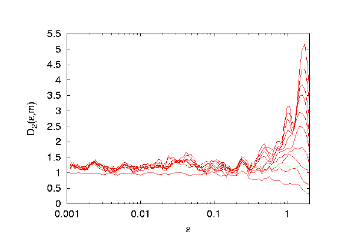
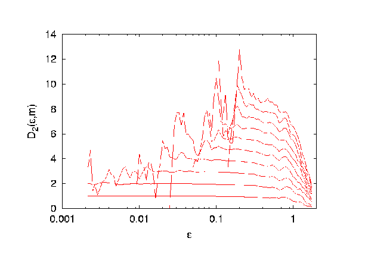

Description of the program:
d2
This program estimates the correlation sum,
the correlation dimension
and the correlation entropy
of a given, possibly multivariate, data set.
It uses
the box assisted search algorithm and is quite fast as long as one is
not interested in large length scales. All length scales are computed
simultaneously and the output is written every 2 min (real time, not
cpu time). It is possible to set a maximum number of pairs. If this
number is reached for a given length scale, the length scale will no
longer be treated for the rest of the estimate.
Please consult the introduction paper
for initial material on dimension estimation. If you are serious, you will need
to study some of the literature cited there as well.
In extension to what is described there, the simultaneous use
of multivariate data and temporal embedding is possible using d2. Thus one has
to give two numbers in order to specify the embedding dimension.
The first is the number of multivariate components, the
second the number of lags in the temporal embedding.
This is realized by giving two numbers
to the option -M, seperated by a comma.
For a standard scalar time series, set the first number to 1. If your
multivariate data spans the whole phase space and no further temporal
embedding is desired, set the second value to 1.
In any case, the total embedding dimension in the sense of the embedding
theorems is the product of the two numbers.
In order to be able to assess the convergence with increasing embedding
dimension, results are reported for several such values. The inner loop steps
through the number of components until the first argument of M is reached. The outer loop increases the number of time
lags until the second argument of M is reached.
Usage of the -c and -M
flags
Suppose, the option -M x,y has been specified.
By default, the first x columns of a file
are used. This behaviour can
be modified by means of the -c flag. It takes
a series of numbers separated by commas. The numbers represent the
colomns. For instance -M 3,1 -c 3,5,7 means,
use three components with no additional temporal embedding, reading
columns 3, 5 and 7. It is not necessary to give the full number of
components to the -c flag. If numbers are
missing, the string is filled up starting with the smallest number,
larger than the largest given. For instance, -M 3,1 -c
3 would result in reading columns 3, 4 and 5.
Usage:
d2 [Options]
Everything not being a valid option will be interpreted as a potential datafile
name. Given no datafile at all means read stdin. Also -
means stdin
Possible options are:
| Option
| Description
| Default
|
| -l#
| number of data points to be used
| whole file
|
| -x#
| number of lines to be ignored
| 0
|
| -d#
| delay for the delay vectors
| 1
|
| -M#,#
| # of components,maximal embedding dimension
| 1,10
|
| -c#
| columns to be read
| 1,...,# of components
|
| -t#
| theiler window
| 0
|
| -R#
| maximal length scale
| (max data interval)
|
| -r#
| minimal length scale
| (max data interval)/1000
|
| -##
| number of epsilon values
| 100
|
| -N#
| maximal number of pairs to be used
(0 means all possible pairs)
| 1000
|
| -E
| use data that is normalized to [0,1] for all components
| not set (use natural units of the data)
|
| -o[#]
| output file name (without extensions)
| 'datafile'[.c2][.d2][.h2][.stat]
(or if data were read from stdin: stdin[.c2][.d2][.h2][.stat])
|
| -V#
| verbosity level
0: only panic messages
1: add input/output messages
2: add input/output messages each time output file is
opened
| 1
|
| -h
| show these options
| none
|
Description of the Output:
The files with the extensions c2, d2 and h2 contain for each embedding
dimension and each length scale
two columns:
first column: epsilon (in units chosen)
second column: the estimated quantity (correlation sum, dimension,
entropy)
.
- extension .c2: This file contains the correlation
sums for all treated length scales and embedding dimensions.
- extension .d2: This file contains the local slopes of the logarithm
of the correlation sum, the correlation dimension.
- extension .h2: This file contains the correlation entropies.
- extension .stat: This file shows the current status of the
estimate.
The output is written every two minutes (real time, not cpu time). So,
you can see preliminary results even if the program is still running.
Post-processing can be done in the following ways.
Either of the output sequences can be smoothed by av-d2.
Takens' estimator can be obtained from the correlation sum (extension
.c2) using c2t and then plotted
versus upper cut-off length.
The Gaussian kernel correlation integral can be
obtained from the standard correlation sum (extension
.c2)
using c2g.
How to get D2 from the data
The file with the extension .d2 contains the skeleton to
estimate the correlation dimension. As written above it contains the
local slopes of the correlation sums for the different embedding
dimension. To get an idea of the correlation dimension it is always a
good idea to plot the file using a log scale for the x-axis.
The figures you get could look something like one of the following
ones.


The first figure clearly shows a plateau. This means for a wide range
of length scales (x-axis) and for all embedding dimensions larger than
a minimal one, the curves collapse and are flat. The value of the
plateau gives an estimate for the dimension (1.2... in this case). The
second figure does not give any dimension estimate, at all. All curves
behave different and there is no common behaviour. From this figure
one can not conclude any dimension for the system.
Typically one finds something in between the two extremes shown
above.
View the C-source.
See also c2naive, and c1.
Table of Contents * TISEAN home